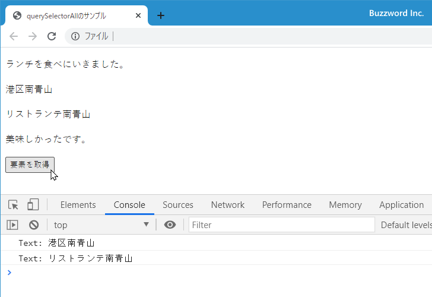

- Home ›
- JavaScript入門 ›
- DOM入門
CSSセレクタ形式の条件に一致する要素ノードを取得(querySelector, querySelectorAll)
Document オブジェクトの querySelector メソッドおよび querySelectorAll メソッドは、 CSS のセレクタ形式で条件を指定して一致する要素ノードを取得します。 id 要素の指定といった簡単なものから条件を組み合わせた複雑なものまで指定することができます。ここでは querySelector メソッドおよび querySelectorAll メソッドの使い方について解説します。
querySelectorおよびquerySelectorAllの書式と使い方
Document オブジェクトの querySelector メソッドは CSS セレクタ形式で条件を指定して要素ノードを取得します。書式は次の通りです。
document.querySelector(selectors)
引数には CSS セレクタ形式の値を DOMString オブジェクトで指定します。( CSS セレクタについては後述します)。戻り値は Element オブジェクトです。 querySelector メソッドは単一の要素ノードを返しますので、複数の要素が条件に一致した場合は最初の要素ノードを返します。見つからなかった場合は null が返されます。
Document オブジェクトの querySelectorAll メソッドは CSS セレクタ形式で条件を指定して要素ノードを取得します。書式は次の通りです。
document.querySelectorAll(selectors)
引数には CSS セレクタ形式の値を DOMString オブジェクトで指定します。( CSS セレクタについては後述します)。戻り値は Element が 1 つまたは複数含まれる NodeList オブジェクトが返されます。条件に一致したすべてのノードを返します。見つからなかった場合は length が 0 の NodeList オブジェクトを返します。
Element オブジェクトは単独の要素ノードを表すのに対して NodeList オブジェクトは複数の要素ノードの集合です。 NodeList オブジェクトでは length プロパティと item メソッドが用意されており、次のように取得したノードの数を取得したり、取得したノードを取り出すことができます。
let elements = document.querySelectorAll('.box');
// 取得した要素の数を取得
let len = elements.length;
// インデックスを指定して要素を取得
let element = elements.item(0);
// 次の形式でもインデックスを指定して要素を取得
let element = elements[0];
同じ CSS セレクタに一致する要素ノードは、 HTML ページの中で記述された順番にインデックスが割り当てられています。インデックスは最初が 0 で 1, 2, 3... と続いていきます。
CSSセレクタの種類と指定方法
CSS(Cascading Style Sheet) セレクタというのは、 HTML ページに対してスタイルをどの要素に設定するのかを指定する時に使用する書式です。 querySelector メソッドおよび querySelectorAll メソッドでは同じ書式を使って HTML ファイルの中の要素を取得するための条件を記述します。
それでは主な CSS セレクタの指定方法についてみていきます。
すべての要素を対象とする(*)
すべての要素ノードを対象とする場合は * と記述します。
let elements = document.querySelectorAll('*');
<div>
<p>こんにちは</p>
</div>
<div>
<p>さようなら</p>
</div>
タグ名を指定
p や div, h1 などのタグ名を指定する場合は、タグ名をそのまま記述します。記述したタグの要素ノードを取得します。下記はタグが div の要素ノードを取得します。
let elements = document.querySelectorAll('div');
<div> <p>こんにちは</p> </div> <div> <p>さようなら</p> </div>
id属性の値を指定(#id)
要素に設定された id 属性の値を指定する場合は、 #値 と記述します。指定した id 属性の値が設定された要素ノードを取得します。下記は id 属性の値が main の要素ノードを取得します。
let elements = document.querySelectorAll('main');
<div id="main"> <p>こんにちは</p> </div> <div> <p>さようなら</p> </div>
class属性の値を指定(.class)
要素に設定された class 属性の値を指定する場合は、 .値 と記述します。指定した class 属性の値が設定された要素ノードを取得します。下記は class 属性の値が box の要素ノードを取得します。
let elements = document.querySelectorAll('box');
<div class="box"> <p>こんにちは</p> </div> <div> <p class="box">さようなら</p> </div>
特定のタグの要素に設定された class 属性の値を指定する場合は、 タグ名.値 と記述します。下記はタグが div の要素ノードの中で class 属性の値が box の要素ノードを取得します。
let elements = document.querySelectorAll('p.box');
<div class="box"> <p>こんにちは</p> </div> <div> <p class="box">さようなら</p> </div>
複数のセレクタのいずれかに一致する(A B C)
セレクタをカンマ(,)で区切って記述することで、複数のセレクタの少なくともいずれか一つに一致する要素ノードを取得します。下記は id 属性の値が main か、または class 属性の値が box の要素ノードを取得します。
let elements = document.querySelectorAll('#main,.box');
<div id="main"> <p>こんにちは</p> </div> <div> <p class="box">さようなら</p> </div>
Aのセレクタに一致する要素の子孫要素の中でBのセレクタに一致する(A B)
セレクタを空白で区切って記述することで、最初のセレクタに一致する要素の子孫要素の中で、次のセレクタに一致する要素ノードを取得します。セレクタが 3 つ以上ある場合は同じように子孫要素を探していきます。下記は id 属性の値が main の要素の子または孫要素の中で、タグが p の要素ノードを取得します。
let elements = document.querySelectorAll('#main p');
<div id="main"> <p class="box">こんにちは</p> <div> <p class="box">いい天気ですね</p> </div> </div> <div id="sub"> <p class="box">さようなら</p> </div>
Aのセレクタに一致する要素の子要素の中でBのセレクタに一致する(A > B)
セレクタを > で区切って記述することで、最初のセレクタに一致する要素の子要素の中で、次に記述したセレクタに一致する要素ノードを取得します。空白で区切った場合は子および孫要素が対象でしたが > で区切った場合は子要素だけが対象となります。下記は id 属性の値が main の要素の子要素の中で、タグが p の要素ノードを取得します。
let elements = document.querySelectorAll('#main > p');
<div id="main"> <p class="box">こんにちは</p> <div> <p class="box">いい天気ですね</p> </div> </div> <div id="sub"> <p class="box">さようなら</p> </div>
Aのセレクタに一致する要素の中で属性値Bを持つ要素に一致する(A[B])
セレクタに一致する要素ノードの中で指定した属性を持つ要素ノードを取得します。下記はタグが p の要素ノードの中で style 属性の値を持つ要素ノードを取得します。
let elements = document.querySelectorAll('p[style]');
<div"> <p style="font-size:10px;">こんにちは</p> </div> <div"> <p style="color:#fff;">さようなら</p> </div>
Aのセレクタに一致する要素の中で属性値Bの値がCの要素に一致する(A[B="C"])
セレクタに一致する要素ノードの中で指定した属性に指定の値が設定された要素ノードを取得します。下記はタグが p の要素ノードの中で style 属性の値が 'color:#fff;' の要素ノードを取得します。
let elements = document.querySelectorAll('p[style="color:#fff;"]');
<div"> <p style="font-size:10px;">こんにちは</p> </div> <div"> <p style="color:#fff;">さようなら</p> </div>
querySelectorのサンプル
querySelector メソッドを使ったサンプルを試してみます。 querySelector メソッドは条件に一致する一つの要素ノードまたは最初の要素ノードを取得します。
次のサンプルを見てください。
<!DOCTYPE html>
<html lang="ja">
<head>
<meta charset="UTF-8">
<title>querySelectorのサンプル</title>
</head>
<body>
<p>ランチを食べにいきました。</p>
<div class="shop">
<p id="place">港区南青山</p>
<p id="shopname">リストランテ南青山</p>
</div>
<p>美味しかったです。</p>
<button onClick="getElement();">要素を取得</button>
<script>
function getElement(){
element = document.querySelector('#shopname');
console.log('Text: ' + element.textContent);
}
</script>
</body>
</html>
表示されたボタンをクリックすると、 HTML ページに含まれる id 属性が指定した値の要素ノードを取得し、要素ノードに含まれるテキストをコンソールに出力しています。
querySelectorAllのサンプル
querySelectorAll メソッドを使ったサンプルを試してみます。 querySelectorAll メソッドは条件に一致するすべての要素ノードを取得します。
次のサンプルを見てください。
<!DOCTYPE html>
<html lang="ja">
<head>
<meta charset="UTF-8">
<title>querySelectorAllのサンプル</title>
</head>
<body>
<p>ランチを食べにいきました。</p>
<div class="shop">
<p>港区南青山</p>
<p>リストランテ南青山</p>
</div>
<p>美味しかったです。</p>
<button onClick="getElement();">要素を取得</button>
<script>
function getElement(){
elements = document.querySelectorAll('.shop p');
let len = elements.length;
for (let i = 0; i < len; i++){
console.log('Text: ' + elements.item(i).textContent);
}
}
</script>
</body>
</html>
表示されたボタンをクリックすると、 HTML ページに含まれる class 属性が指定した値の要素の子孫要素の中で、タグが p の要素ノードを取得し、要素のテキストをコンソールに出力しています。

-- --
querySelector メソッドおよび querySelectorAll メソッドの使い方について解説しました。
( Written by Tatsuo Ikura )

著者 / TATSUO IKURA
初心者～中級者の方を対象としたプログラミング方法や開発環境の構築の解説を行うサイトの運営を行っています。